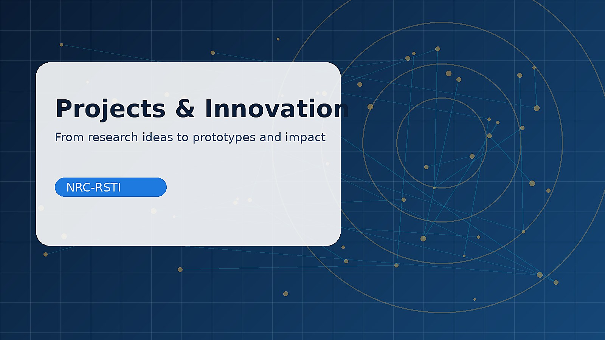

01
نموذج تصنيف صور تعليمي
تصور لمشروع تدريبي يشرح مبادئ الرؤية الحاسوبية والتقييم العملي.
مساحة لتنظيم المشاريع الجارية والمنجزة مستقبلًا. الأمثلة الحالية أفكار توضيحية مأخوذة من النسخة التأسيسية ولا تمثل سجلًا بمشاريع مكتملة.

الأمثلة التالية مقترحة لإظهار مجالات العمل المحتملة.
جميع البطاقات أدناه مفاهيم أو نماذج مقترحة؛ لا تُعرض على أنها مشروعات مكتملة أو ممولة.
تصور لمشروع تدريبي يشرح مبادئ الرؤية الحاسوبية والتقييم العملي.
تصور لنموذج أولي يقيس الحرارة والرطوبة ويعرض البيانات.
فكرة لمشروع يجمع الإلكترونيات والبرمجة والتحكم والميكاترونكس.
تصور لحزمة أنشطة تربط التعلم المدرسي بالتصميم والتجريب.
تُعرض المفاهيم والنماذج الأولية بوضوح بصفتها محتوى توضيحيًا. وعند إضافة مخرجات فعلية، يُتحقق من العنوان، والمؤلفين، والتواريخ، وروابط المصادر أو DOI وفق طبيعة المادة.
نسعد بالاستفسارات المهنية والاقتراحات المتصلة بتوجهات المركز.